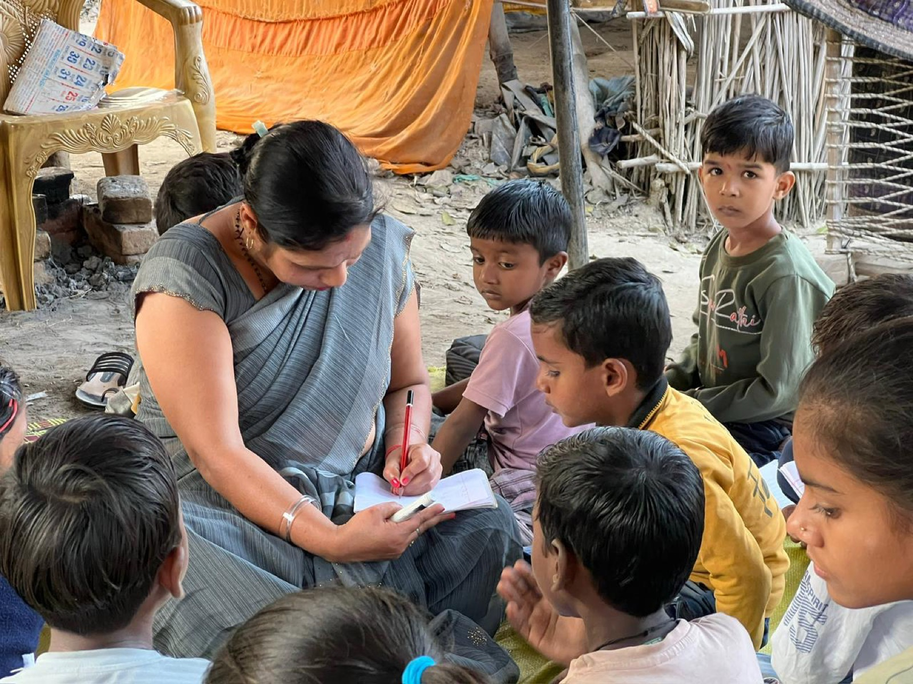

We work relentlessly for every child's right to a happy, healthy childhood. Join us in protecting their rights and building a brighter future.

Real programs, run on the ground in Prayagraj and across Uttar Pradesh — not pledges on a page.
A free school on the banks of the Ganges in Prayagraj for children of boatmen families who have no access to formal schooling — teaching Hindi, English, Maths, Science and life skills.
Know moreFood rations, clean water, medicines, blankets and hygiene kits delivered within 24 hours to disaster-affected families across 12+ districts of Uttar Pradesh.
Know moreRenovating clean, functional toilets in government and community schools in Prayagraj — so children, especially girls, attend school safely and regularly.
Know more
On the ghats of Prayagraj, Ravi, 9, had never held a pencil. His father earned ₹200–300 a day ferrying pilgrims across the Ganges — school was a distant dream. When ACD set up its open-air classroom near the riverbank, Ravi was among the first children to sit down and learn. Within six months, he could read Hindi paragraphs, write his own name in English, and solve basic arithmetic. Today, Ravi dreams of becoming a teacher so he can come back and teach children like him.
"Pehli baar laga ki mere bachche ka bhi future ho sakta hai" — For the first time, I felt my child could have a future too, says Ravi's father.
Helping parents understand and act on their children's education, health and safety needs.
Working with local leaders and volunteers so programs are trusted and built to last.
Partnering with schools, local administration and CSR partners to extend our reach.
Creating spaces — classrooms, playtime, sports — where children are seen and heard.

Whether it's ₹500 for a month of school supplies or an afternoon of your time — your support keeps the Pathshala on the ghats open.
{kind=link}
{kind=link}
{kind=link}